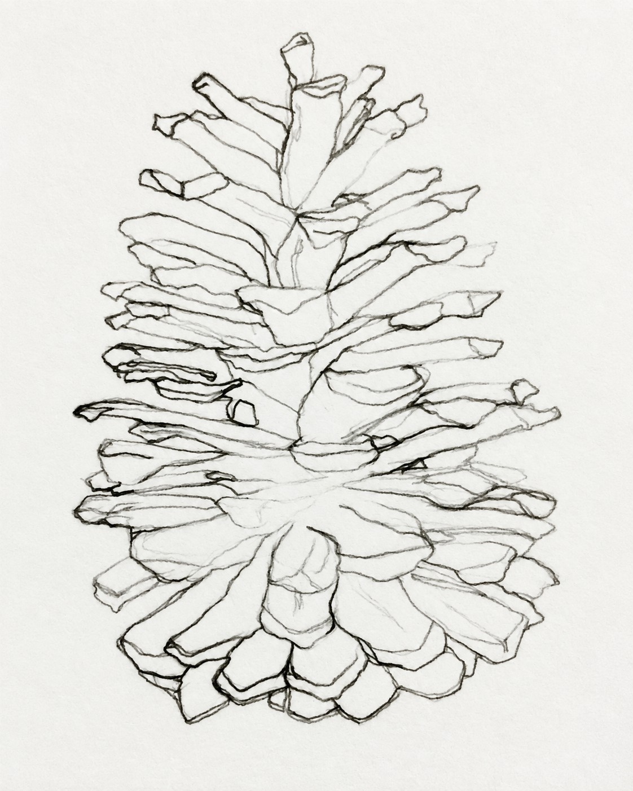
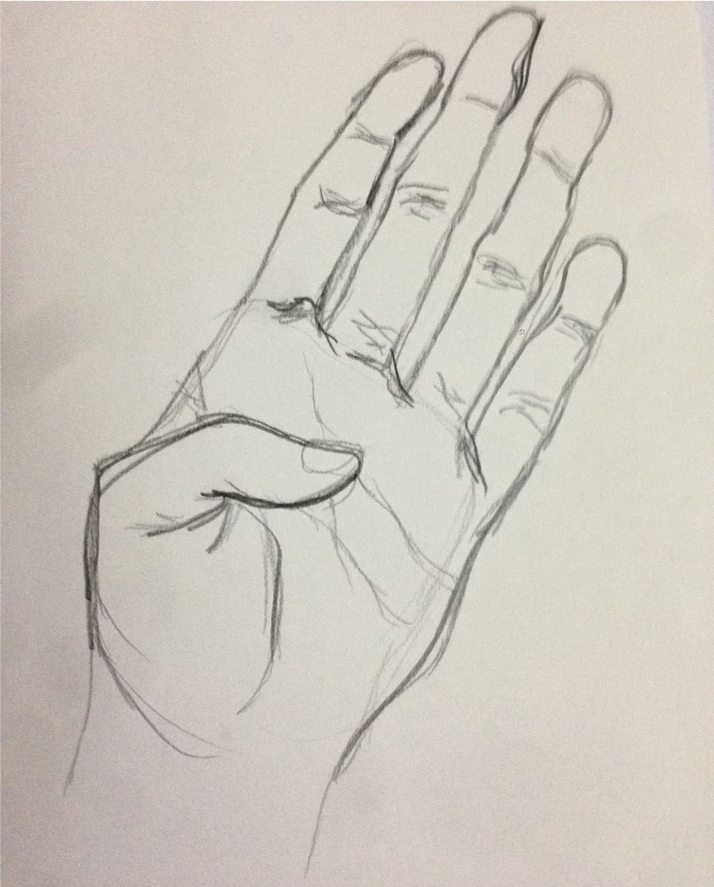
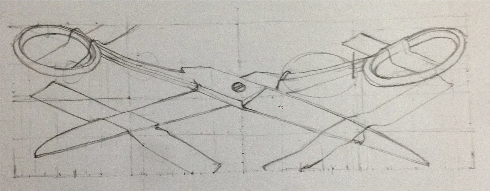
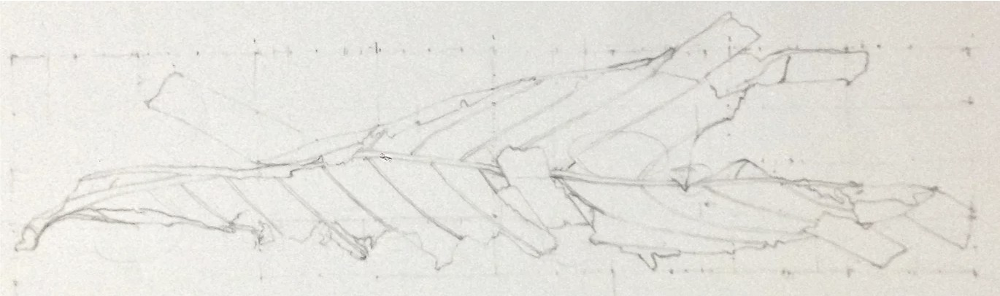
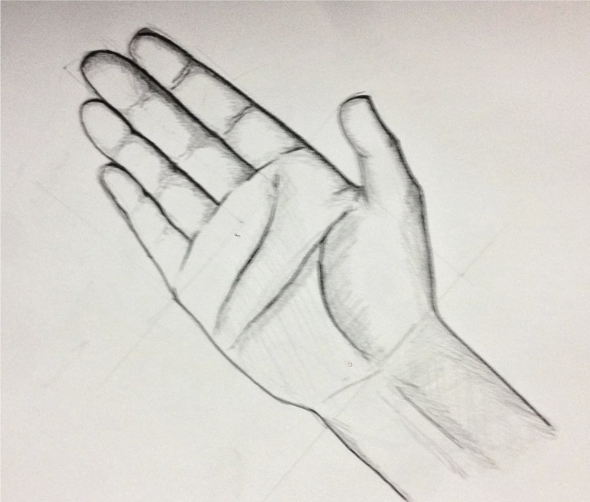
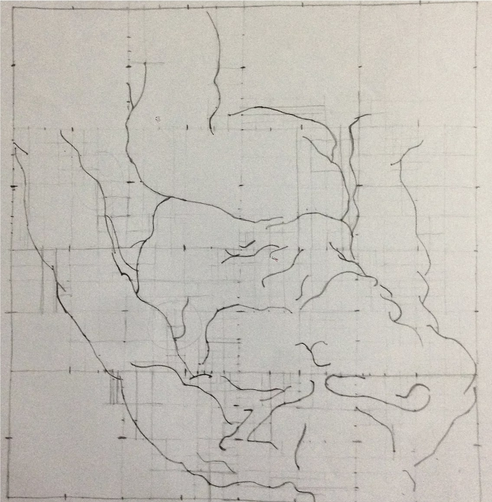

Kresby tužkou
Umělecké kresby
Série kreseb tužkou zaměřených na strukturu a linii: ruce, přírodní formy a každodenní předměty, kreslené podle skutečnosti. Některé využívají mřížku jako referenci pro přesný přenos proporcí, jiné jsou kreslené volněji.

Borovicová šiška, tužka na čtverečkovaném papíře.

Studie ruky, dlaní směrem dopředu.

Nůžky, vyřešené v perspektivě s viditelnými konstrukčními liniemi.

List, studovaný skrze svou strukturu na čtverečkovaném referenčním listu.

Druhá studie ruky, dovedená dál do stínování a perspektivy.

Cvičení přenosu pomocí mřížky, kopírující referenci proporčně čtverec po čtverci.
Rád bych s vámi komunikoval česky. Češtinu se zatím učím, a proto jsem při přípravě tohoto dokumentu využil online překladač. Předem se omlouvám za případné jazykové nepřesnosti a děkuji za pochopení.